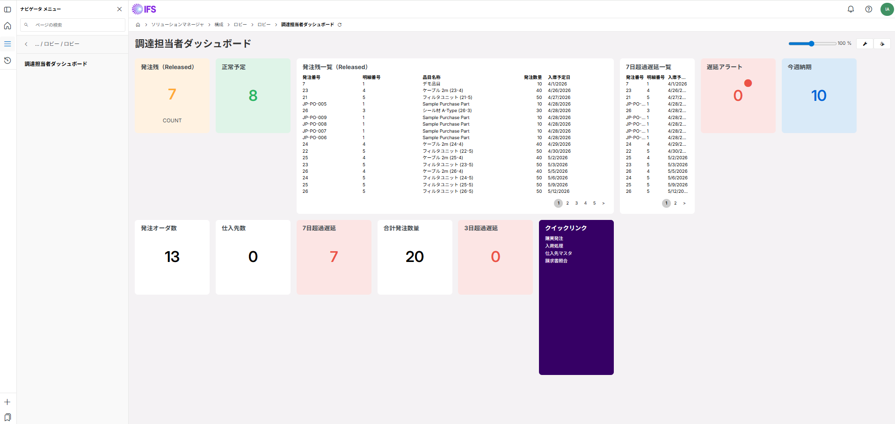

このロビーの背景
現状の課題
- ログイン後に目的の画面を探すのに時間がかかる
- 遅延発注・承認待ちに気づくのが遅れる
- 月別トレンドを把握するには別途レポートを開く必要がある
ロビーで解決
- ログイン直後に9種のKPI・発注残・超過遅延が一目で把握できる
- 遅延・承認待ちを色・数値で即認識
- クイックリンクで頻用画面へワンクリック遷移
実機エビデンス（IFS Cloud pwojaqu-dev1）

IFS Cloud 25R2.5 実機データ（2026-05-27 取得）
KPI サマリー（実データ）
7
発注残（Released）
COUNT
8
正常予定
遅延なし
0
遅延アラート
入庫予定日超過
10
今週納期
7日以内入庫予定
13
発注オーダ数
Released ヘッダー
0
仕入先数
DISTINCT
7
7日超過遅延
SYSDATE-7 超過
20
合計発注数量
SUM BUY_QTY_DUE
0
3日超過遅延
SYSDATE-3 超過
発注残一覧（Released）
KPI は IFS Cloud 25R2.5 実機データに基づく（2026-05-27）。
成果物ドキュメント